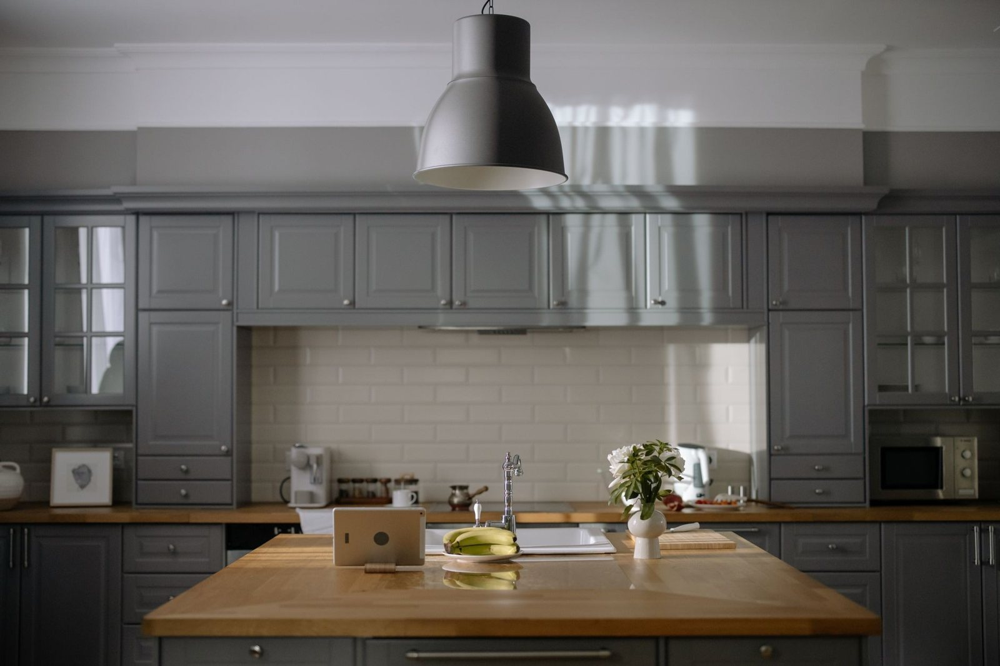
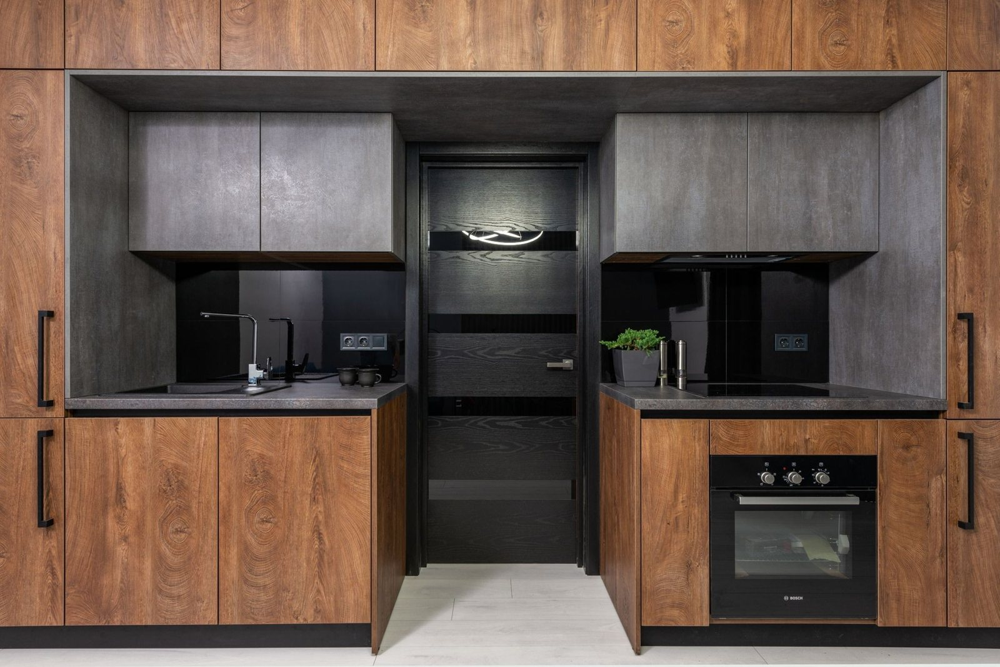

Od kuchni po zabudowę skosów

Kuchnie na wymiar
Kuchnia ma pasować do tego, jak gotujesz. Rozrysowuję zabudowę pod Twoje sprzęty i nawyki: wysokość blatu pod Twój wzrost, szuflady tam, gdzie sięgasz najczęściej. Szafki prowadzę do sufitu, żeby nic nie kurzyło się na wierzchu. Projekt oglądasz, zanim zamówię materiał.

Szafy i garderoby
Szafa na wymiar bierze przestrzeń od podłogi po sufit, bez martwej szczeliny na kurz. Środek planujemy razem: drążki i szuflady pod to, co naprawdę wieszasz i składasz. Drzwi przesuwne albo otwierane - zależnie od tego, ile miejsca ma pokój.

Zabudowy wnęk i skosów
Skos na poddaszu i wnęka pod schodami to miejsca, które zwykle się marnują. Robię zabudowy dokładnie pod te nieproste kąty: szafki schodzące w skos, szuflady pod stopniami. Z martwego rogu robi się najpojemniejsza część domu.

Meble pokojowe i łazienkowe
Szafka RTV pod tę jedną ścianę albo biurko we wnękę - robię meble do każdego pomieszczenia, w którym gotowe wymiary zawodzą. W łazience daję płyty i fronty odporne na parę i wodę, z okuciami, które nie rdzewieją. Taki zestaw przeżyje niejedno zalanie.

Blaty i fronty na wymiar
Blat pod kuchenną wyspę albo front do starej zabudowy - dokładam pojedyncze elementy tam, gdzie wymiana całej kuchni nie ma sensu. Wymiar biorę na miejscu, po wykończeniu ścian, bo przy blacie milimetry decydują o tym, czy przylega bez szczeliny.

Pomiar i projekt
Zanim cokolwiek powstanie, przyjeżdżam z miarą i słucham. Sprawdzam piony ścian i przebieg rur - to, co potem najczęściej psuje gotowe projekty. Dostajesz rysunek z wymiarami i cenę. Decyzję podejmujesz na spokojnie, bo projekt do niczego nie zobowiązuje.
Od rozmowy do realizacji
Prosty, przewidywalny proces - wiesz, na czym stoisz na każdym etapie.
Kontakt i ustalenia
Opowiadasz, czego potrzebujesz, a ja podpowiadam, co się sprawdzi.
Wycena i termin
Dostajesz jasną cenę i termin, zanim cokolwiek ruszy.
Solidne wykonanie
Robię na czas i zgodnie z ustaleniami.
Która z usług Cię interesuje?
Napisz, co chcesz zrobić - odpowiem z propozycją i wyceną.